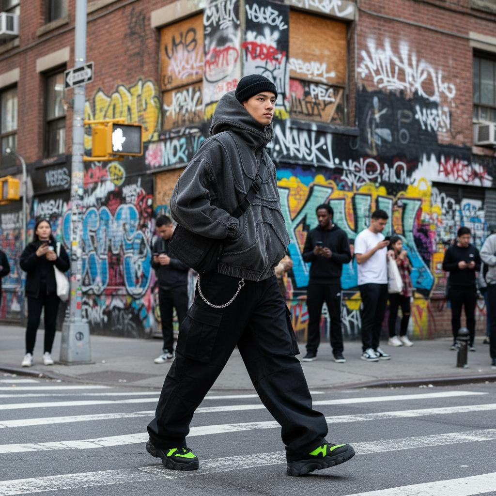
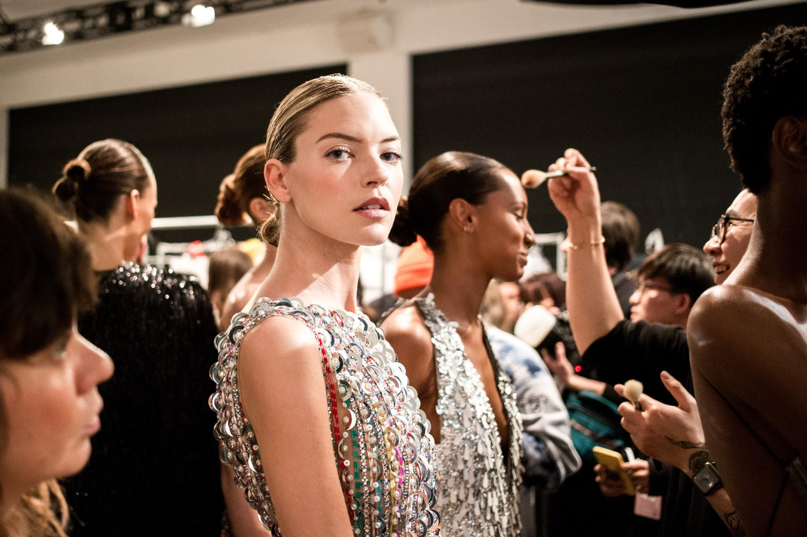
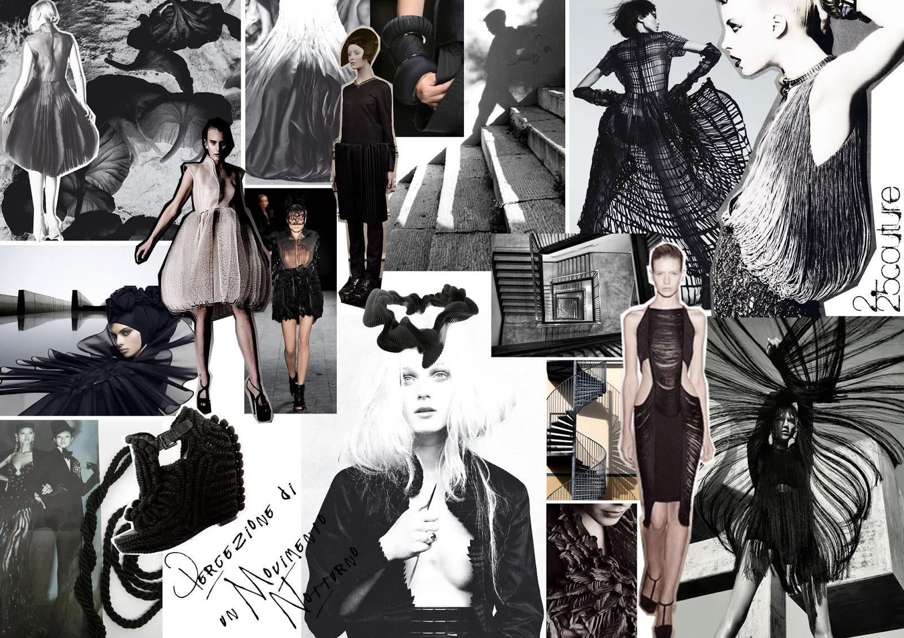

01 / Memória
Uma história em movimento
Das transformações do século XX às referências que ainda influenciam o presente.
Conheça a história ↗Mais do que tendências, a moda conta histórias, revela culturas e transforma a maneira como nos expressamos. Explore o universo que existe por trás de cada escolha.
Explore a MODE ↗Um olhar sobre as pessoas, movimentos e ideias que fizeram — e continuam fazendo — a história da moda.
Das transformações do século XX às referências que ainda influenciam o presente.
Conheça a história ↗
Criadores e visionários que desafiaram padrões e mudaram a forma de vestir.
Descubra os ícones ↗
Minimalismo, streetwear, punk, grunge e outras linguagens visuais.
Explore os estilos ↗
A moda contemporânea dialoga com tecnologia, diversidade, sustentabilidade e novas formas de produção. Entenda como essas mudanças estão redesenhando a indústria.
Ver a moda atual ↗Uma peça clássica que atravessou gerações, mudou de forma e continua sendo reinterpretada. Conheça sua trajetória em nosso especial.
Ler especial sobre o terno ↗



